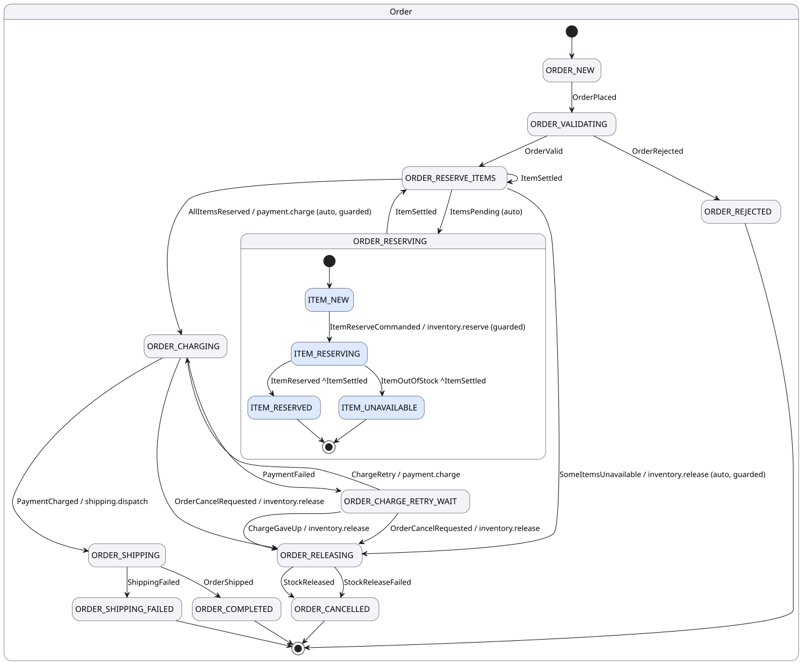
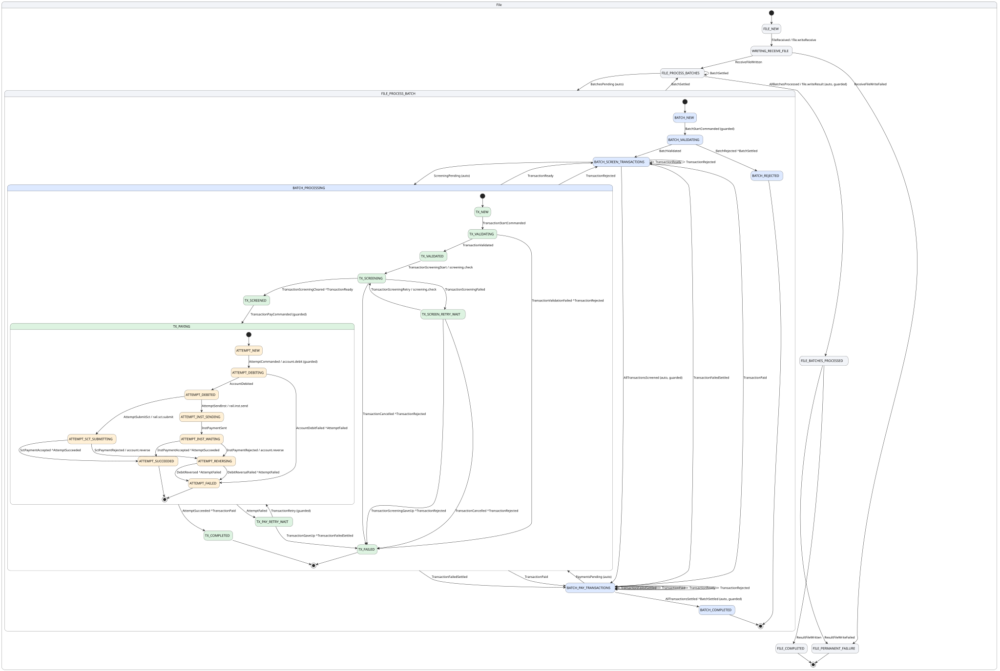

Hierarchical transactional state machines for Java and Clojure, on PostgreSQL.
What it is
Business processes that span several systems fail halfway. The retries, the recovery and the audit trail are hand-written in each service, hard to get right, and tested last.
voucha takes that out of application code. Declare the process as nested state machines, write a small pure function per transition, and the runtime executes it: one event, one database transaction, one checkpoint. Calls to other systems are recorded in that transaction and made after it commits, and the policy you declared per call decides what an unknown outcome means.
Benefits
Declare, don't plumb
States and events are yours. Locking, transactions, retries, idempotency keys, crash recovery and audit are the runtime's.
No halfway failures
Per external call, declare once whether a resend is safe, the other side can be asked, or an operator must decide.
Mistakes are compile errors
Unreachable states, dead ends, unhandled outcomes and rules that can never hold are caught before anything runs.
Proven, not just tested
The inductive invariant is generated from the definition. The examples are proven with their business invariants, no hand-written lemma.
SQL is the interface
Submit events from your own transaction. Carry out effects as a participant, work and report in one transaction, from any language.
Operable
voucha why names what blocks a node. Interventions are events with an operator and a reason. Every transition replays.
Testing built in
Harness, scripted fakes, a simulator over every interleaving, an invariant oracle, fault points, and models for P, TLC and Apalache.
Change it while it runs
New work starts under the new definition. Work in flight finishes under the one it started with.
Examples
An order and its line items Java
Two levels, four effects, a decision state, a bounded retry. Charging twice must never happen, so an unknown charge outcome is resolved by asking the provider, never by charging again. Walkthrough

A SEPA payment file Clojure
Four levels: a pain.001 file, its batches, their transactions, and per transaction the debit, the send over SCT Inst or SCT, and the reversal if the rail rejects. Walkthrough

A travel booking Clojure, from OMG's BPMN 2.0 by Example
The standard's own saga, transcribed: a flight and a hotel booked and charged, the client's replies as callbacks with 24-hour limits, compensation through the reservations, two retry limits. Walkthrough
Get started
git clone https://github.com/mikko-ahonen/voucha && cd voucha
clojure -T:build javac
clojure -X:test
bin/voucha dev voucha.example.order/app
bin/voucha verify voucha.example.order/appA JDK and the Clojure CLI; PostgreSQL is embedded for development and tests.
Experimental: tested under crash, contention and fault injection, proven at the default bounds and SEPA at bounds of three, no operating history yet. Expect interfaces to change.
Contact
mikko@voucha.net for running voucha in production,
consulting, or reliable systems in general.
Issues and pull requests: github.com/mikko-ahonen/voucha.